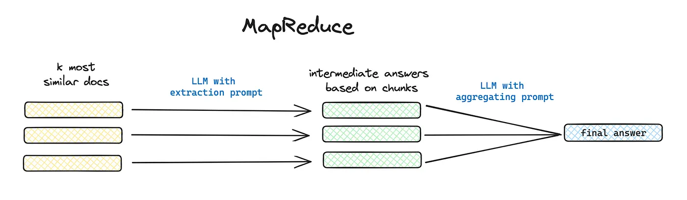

RamsNavigator is an indoor navigation system for Fordham University's campus that accepts natural language queries and returns visual, turn-by-turn routes. Instead of requiring users to know room numbers or building codes, they can ask conversational questions:
The system parses intent with GPT-4o-mini, finds the optimal path using Dijkstra on a Neo4j graph, fetches location metadata and images from MongoDB, and renders an interactive route map using Cytoscape.js.
Stores campus locations as nodes and corridors/connections as edges with distance weights. Enables Dijkstra shortest-path queries natively. Perfect for "find the optimal route through multiple stops": a query that would be painful in SQL or MongoDB.
Stores rich metadata per location: room descriptions, images, opening hours, accessibility info, faculty offices. Decouples navigation logic from content storage, keeping Neo4j lean and fast for graph traversal.
This polyglot architecture is the key design decision: graph databases excel at relationship traversal while document stores excel at flexible metadata retrieval. Using both gets the best of each.
GPT-4o-mini parses the user's natural language query into structured intent: a list of destination nodes (in order of visit) and optional constraints (e.g., accessibility, open now). This intent is then translated into a sequence of Neo4j shortest-path queries, chained together for multi-stop routes.
Built with Prarthana Shiwakoti and Swoichha Adhikari as a NoSQL databases course project at Fordham University.